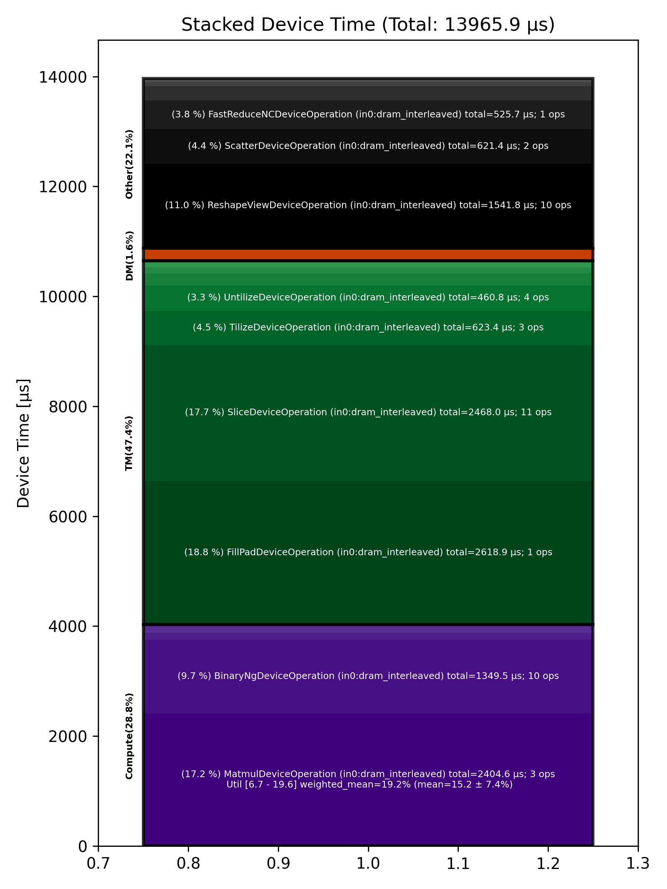

🚀 Performance Report 🚀 ======================== ID Total % Bound OP Code Device Device Time Op-to-Op Gap Cores DRAM DRAM % FLOPs FLOPs % Math Fidelity --------------------------------------------------------------------------------------------------------------------------------------------------------------------------- 11 0.6 % LayerNormDeviceOperation 9 124 μs 32 BF16, BF16 => BF16 51 0.9 % ReshapeViewDeviceOperation 17 54 μs 116 μs 72 BF16 => BF16 67 0.3 % UntilizeDeviceOperation 1 15 μs 45 μs 45 BF16 => BF16 98 1.0 % RepeatDeviceOperation 0 60 μs 138 μs 72 BF16 => BF16 130 1.2 % TilizeDeviceOperation 0 208 μs 34 μs 45 BF16 => BF16 176 8.4 % DRAM MatmulDeviceOperation 32 x 2880 x 5760 14 1,423 μs 231 μs 60 193 GB/s 66.9 % 11.9 TFLOPs 19.4 % HiFi4 BF16 x BFP8 => BF16 213 0.4 % BinaryNgDeviceOperation 19 83 μs 1 μs 72 BF16, BF16 => BF16 226 1.1 % UntilizeDeviceOperation 0 219 μs 1 μs 60 BF16 => BF16 267 6.1 % SliceDeviceOperation 9 1,194 μs 1 μs 72 BF16 => BF16 321 1.1 % TilizeDeviceOperation 31 208 μs 1 μs 45 BF16 => BF16 340 0.2 % UnaryDeviceOperation 18 35 μs 1 μs 72 BF16 => BF16 355 0.2 % BinaryNgDeviceOperation 1 39 μs 1 μs 72 BF16, BF16 => BF16 400 1.1 % UntilizeDeviceOperation 14 221 μs 1 μs 60 BF16 => BF16 419 6.1 % SliceDeviceOperation 1 1,193 μs 1 μs 72 BF16 => BF16 450 1.1 % TilizeDeviceOperation 0 208 μs 1 μs 45 BF16 => BF16 493 0.2 % UnaryDeviceOperation 11 35 μs 1 μs 72 BF16 => BF16 521 0.2 % BinaryNgDeviceOperation 7 42 μs 1 μs 72 BF16, BF16 => BF16 570 0.3 % UnaryDeviceOperation 24 54 μs 1 μs 72 BF16 => BF16 584 0.3 % BinaryNgDeviceOperation 6 49 μs 1 μs 72 BF16, BF16 => BF16 621 0.3 % BinaryNgDeviceOperation 11 49 μs 1 μs 72 BF16, BF16 => BF16 649 4.8 % SLOW MatmulDeviceOperation 32 x 2880 x 2880 7 939 μs 1 μs 45 148 GB/s 51.3 % 9.0 TFLOPs 19.6 % HiFi4 BF16 x BFP8 => BF16 703 0.3 % BinaryNgDeviceOperation 29 49 μs 1 μs 72 BF16, BF16 => BF16 715 6.3 % ReshapeViewDeviceOperation 9 1,240 μs 1 μs 72 BF16 => BF16 761 0.5 % TypecastDeviceOperation 23 106 μs 1 μs 72 BF16 => FP32 795 0.5 % ReshapeViewDeviceOperation 25 89 μs 1 μs 72 FP32 => FP32 805 0.2 % SLOW MatmulDeviceOperation 32 x 2880 x 128 3 43 μs 1 μs 4 18 GB/s 6.1 % 0.6 TFLOPs 6.7 % HiFi2 FP32 x BFP8 => FP32 842 0.0 % TypecastDeviceOperation 8 3 μs 1 μs 4 FP32 => BF16 896 0.4 % TopKDeviceOperation 30 80 μs 2 μs 1 BF16 => BF16 929 0.0 % SliceDeviceOperation 31 1 μs 2 μs 1 BF16 => BF16 945 0.0 % SliceDeviceOperation 15 1 μs 2 μs 1 UINT16 => UINT16 967 0.0 % TypecastDeviceOperation 5 2 μs 2 μs 1 UINT16 => INT32 1024 0.0 % ReshapeViewDeviceOperation 30 9 μs 1 μs 32 INT32 => INT32 1056 0.0 % UntilizeWithUnpaddingDeviceOperation 30 5 μs 1 μs 32 INT32 => INT32 1080 0.0 % UntilizeWithUnpaddingDeviceOperation 22 5 μs 1 μs 32 INT32 => INT32 1105 0.0 % PermuteDeviceOperation 15 4 μs 1 μs 32 INT32 => INT32 1147 0.0 % PermuteDeviceOperation 25 4 μs 1 μs 32 INT32 => INT32 1160 0.0 % ConcatDeviceOperation 6 3 μs 1 μs 64 INT32, INT32 => INT32 1210 0.0 % PermuteDeviceOperation 24 4 μs 1 μs 32 INT32 => INT32 1234 0.0 % TilizeWithValPaddingDeviceOperation 16 9 μs 1 μs 32 INT32 => INT32 1269 0.1 % SoftmaxDeviceOperation 19 25 μs 1 μs 72 BF16 => BF16 1282 0.4 % AllGatherDeviceOperation 0 87 μs 1 μs 24 INT32 => INT32 1314 0.1 % AllGatherDeviceOperation 0 11 μs 1 μs 8 BF16 => BF16 1377 0.1 % ReshapeViewDeviceOperation 31 11 μs 1 μs 16 INT32 => INT32 1383 0.0 % SliceDeviceOperation 5 3 μs 1 μs 16 INT32 => INT32 1438 0.1 % UntilizeWithUnpaddingDeviceOperation 28 15 μs 1 μs 16 INT32 => INT32 1449 0.7 % SliceDeviceOperation 7 6 μs 140 μs 72 INT32 => INT32 1479 1.2 % TilizeWithValPaddingDeviceOperation 5 8 μs 229 μs 16 INT32 => INT32 1520 0.6 % BinaryNgDeviceOperation 14 13 μs 110 μs 72 INT32, INT32 => INT32 1549 0.8 % BinaryNgDeviceOperation 11 4 μs 152 μs 72 INT32, INT32 => INT32 1584 1.3 % ReshapeViewDeviceOperation 14 7 μs 251 μs 16 INT32 => INT32 1625 1.3 % ReshapeViewDeviceOperation 23 4 μs 244 μs 16 BF16 => BF16 1661 0.5 % UntilizeWithUnpaddingDeviceOperation 27 11 μs 88 μs 1 INT32 => INT32 1689 0.8 % SliceDeviceOperation 23 1 μs 156 μs 1 INT32 => INT32 1713 0.7 % TilizeWithValPaddingDeviceOperation 15 44 μs 95 μs 1 INT32 => INT32 1730 1.1 % UntilizeWithUnpaddingDeviceOperation 0 10 μs 211 μs 1 BF16 => BF16 1783 0.4 % SliceDeviceOperation 21 1 μs 75 μs 1 BF16 => BF16 1803 0.9 % TilizeWithValPaddingDeviceOperation 9 23 μs 156 μs 1 BF16 => BF16 1849 0.4 % UntilizeWithUnpaddingDeviceOperation 23 7 μs 76 μs 1 INT32 => INT32 1871 1.1 % UntilizeWithUnpaddingDeviceOperation 13 6 μs 215 μs 1 BF16 => BF16 1914 2.0 % ScatterDeviceOperation 24 313 μs 89 μs 1 BF16, INT32 => BF16 1935 0.2 % TilizeWithValPaddingDeviceOperation 13 32 μs 1 μs 64 BF16 => BF16 1984 0.5 % UntilizeWithUnpaddingDeviceOperation 30 12 μs 90 μs 1 INT32 => INT32 2011 1.2 % SliceDeviceOperation 25 1 μs 229 μs 1 INT32 => INT32 2024 0.7 % TilizeWithValPaddingDeviceOperation 6 44 μs 93 μs 1 INT32 => INT32 2071 0.8 % UntilizeWithUnpaddingDeviceOperation 21 10 μs 138 μs 1 BF16 => BF16 2096 0.4 % SliceDeviceOperation 14 1 μs 73 μs 1 BF16 => BF16 2142 1.0 % TilizeWithValPaddingDeviceOperation 28 23 μs 176 μs 1 BF16 => BF16 2155 0.4 % UntilizeWithUnpaddingDeviceOperation 9 7 μs 69 μs 1 INT32 => INT32 2194 0.8 % UntilizeWithUnpaddingDeviceOperation 16 6 μs 161 μs 1 BF16 => BF16 2216 0.5 % UntilizeWithUnpaddingDeviceOperation 6 10 μs 83 μs 64 BF16 => BF16 2265 2.4 % ScatterDeviceOperation 23 309 μs 169 μs 1 BF16, INT32 => BF16 2296 0.2 % TilizeWithValPaddingDeviceOperation 22 32 μs 1 μs 64 BF16 => BF16 2330 0.1 % ReshapeViewDeviceOperation 24 25 μs 1 μs 16 BF16 => BF16 2352 1.0 % MeshPartitionDeviceOperation 14 1 μs 195 μs 4 BF16 => BF16 2388 0.7 % UntilizeDeviceOperation 18 6 μs 140 μs 1 BF16 => BF16 2410 3.5 % MeshPartitionDeviceOperation 8 2 μs 694 μs 32 BF16 => BF16 2461 0.6 % TilizeWithValPaddingDeviceOperation 27 4 μs 107 μs 1 BF16 => BF16 2478 0.9 % TransposeDeviceOperation 12 2 μs 179 μs 72 BF16 => BF16 2503 0.8 % ReshapeViewDeviceOperation 5 50 μs 102 μs 72 BF16 => BF16 2543 5.5 % BinaryNgDeviceOperation 13 938 μs 137 μs 72 BF16, BF16 => BF16 2562 13.3 % FillPadDeviceOperation 0 2,619 μs 1 μs 72 BF16 => BF16 2603 2.7 % FastReduceNCDeviceOperation 9 526 μs 1 μs 72 BF16 => BF16 2632 0.3 % SliceDeviceOperation 6 65 μs 1 μs 72 BF16 => BF16 2658 1.2 % ReduceScatterDeviceOperation 0 227 μs 1 μs 24 BF16 => BF16 2690 0.8 % AllGatherDeviceOperation 0 162 μs 1 μs 40 BF16 => BF16 2722 0.4 % BinaryNgDeviceOperation 0 85 μs 1 μs 72 BF16, BF16 => BF16 2754 0.3 % ReshapeViewDeviceOperation 0 53 μs 1 μs 72 BF16 => BF16 --------------------------------------------------------------------------------------------------------------------------------------------------------------------------- 100.0 % 87 device ops, 0 host ops, 0 signposts 13,966 μs 5,722 μs 📊 Stacked report 📊 ==================== Total % Op Code Device Time Sum Op Count Op Category Min FLOPs Max FLOPs Mean FLOPs Std FLOPs Weighted Mean FLOPs ------------------------------------------------------------------------------------------------------------------------------------------------------------------------------ 18.75 % FillPadDeviceOperation (in0:dram_interleaved) 2,618.86 μs 1 TM 17.67 % SliceDeviceOperation (in0:dram_interleaved) 2,468.05 μs 11 TM 17.22 % MatmulDeviceOperation (in0:dram_interleaved) 2,404.64 μs 3 Compute 6.71 % 19.57 % 15.21 % 7.36 % 19.21 % 11.04 % ReshapeViewDeviceOperation (in0:dram_interleaved) 1,541.76 μs 10 Other 9.66 % BinaryNgDeviceOperation (in0:dram_interleaved) 1,349.47 μs 10 Compute 4.46 % TilizeDeviceOperation (in0:dram_interleaved) 623.43 μs 3 TM 4.45 % ScatterDeviceOperation (in0:dram_interleaved) 621.39 μs 2 Other 3.76 % FastReduceNCDeviceOperation (in0:dram_interleaved) 525.68 μs 1 Other 3.30 % UntilizeDeviceOperation (in0:dram_interleaved) 460.76 μs 4 TM 1.86 % AllGatherDeviceOperation (in0:dram_interleaved) 260.11 μs 3 Other 1.62 % ReduceScatterDeviceOperation (in0:dram_interleaved) 226.63 μs 1 DM 1.58 % TilizeWithValPaddingDeviceOperation (in0:dram_interleaved) 220.10 μs 9 TM 0.89 % LayerNormDeviceOperation (in0:dram_interleaved) 124.34 μs 1 Compute 0.88 % UnaryDeviceOperation (in0:dram_interleaved) 123.33 μs 3 Compute 0.79 % TypecastDeviceOperation (in0:dram_interleaved) 110.47 μs 3 TM 0.73 % UntilizeWithUnpaddingDeviceOperation (in0:dram_interleaved) 101.73 μs 12 TM 0.57 % TopKDeviceOperation (in0:dram_interleaved) 79.56 μs 1 Other 0.43 % RepeatDeviceOperation (in0:dram_interleaved) 60.28 μs 1 Other 0.18 % SoftmaxDeviceOperation (in0:dram_interleaved) 25.19 μs 1 Compute 0.09 % PermuteDeviceOperation (in0:dram_interleaved) 12.20 μs 3 TM 0.02 % MeshPartitionDeviceOperation (in0:dram_interleaved) 3.07 μs 2 Other 0.02 % ConcatDeviceOperation (in0:dram_interleaved) 3.03 μs 1 TM 0.01 % TransposeDeviceOperation (in0:dram_interleaved) 1.79 μs 1 TM ------------------------------------------------------------------------------------------------------------------------------------------------------------------------------
